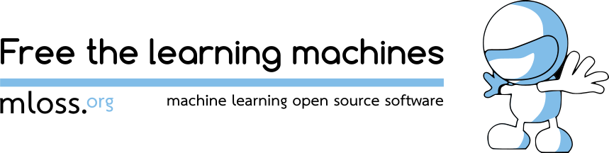

Note
The 2015 edition of the machine learning open source software (MLOSS) workshop was full of very mature discussions that I strive to report here.
I give links to the videos. Some machine-learning researchers have great thoughts about growing communities of coders, about code as a process and a deliverable.
I was a co-organizer of the MLOSS 2015 workshop, held during ICML 2015. As I have finally figured out where the videos are, now is a good time to summarize my impressions on the workshop.
Online videos of the talks
The videos of all the talks are online:
- Python and Parallelism or Dask by Matthew Rocklin
- Collaborative filtering via matrix decomposition in mlpack by Ryan Curtin
- BLOG: a probabilistic programming language for open-universe contingent Bayesian networks by Yi Wu
- Spotlights:
- Nilearn, machine learning for neuroimaging in Python (Alexandre Abraham)
- KeLP: a Kernel-based Learning Platform in Java (Simone Filice)
- DiffSharp: Automatic Differentiation Library (Atılım Güneş Baydin)
- The FAST toolkit for Unsupervised Learning of HMMs (José P. González-Brenes)
- OpenML: a Networked Science Platform for Machine Learning (Joaquin Vanschoren)
- Julia’s Approach to Open Source Machine Learning by John Myles White
- Do it yourself deep learning with the Caffe community by Evan Shelhamer
- From flop to success in academic software development by Gaël Varoquaux
MLOSS: a maturing community
When Antti Honkela and Cheng Soon Ong approached me to co-organize an MLOSS workshop, I felt that it was important to do it for the sake of open source scientific software. But it didn’t feel very enthousiastic about the event or the talks themselves. Boy I was wrong.
Huge attendance: open-source ML software is now mainstream.
My first MLOSS workshop was at the ICML 2011 conference, in Haifa. The workshop was in a tiny cramped room, with a couple of dozens of geeks, and it felt like a clique of people on the side of the conference. This year, we had a huge room and more than 200 people showed up.
I am used to talks being about a grad student or young researcher that has whiped the code of a paper on the web, with an open license but no vision. This year, people were presenting actual projects, with long-term goals and the desire to solve a problem large than their latest research. It might explain why the attendance was huge: people came because talks might genuinely help them.
With Cheng and Antti, we had choosen as a theme “open ecosystems”, because ecosystems are the key to scaling computing and science. Between us, imposing a theme on a workshop is something challenging, as people submit abstracts, good or bad, and one has to compose with what one has. However, at lot of talks mentioned how the projects slot in a wider picture, and interact with a community. For instance, Evan attributes part of the success of Cafe to the “Model Zoo” in which the community contributes fitted models. At the other end of the spectrum, OpenML is a full online project with the goal to foster collaboration and comparison. Project developers have shown in their talk that they are very conscious of other projects that might be used together with their’s.
Accepting the sustainability challenges
Over the time, I have gradually realized the importance of community building, ie project management and goal setting, more than technical virtuosity. Historically, the scientific culture of code has put the emphasis on the genius ideas behind the code, and the craftsmanship of the implementation, to the cost of sustainability.
Alone, I go fast. Together, we go far.
I was surprised to see that the MLOSS community was growing very aware of mechanisms of long-term project life, in particular the human factors.
I was asked by my coorganizers to give a talk on factors of success of open source scientific software. I touched upon software engineering, project vision, licensing, governance, community building. All these topics deemed “non scientific” and thus so often despised and left out. I was astonished to find out that the talks before me were giving very good advice on these. I found that I only had to summarize and comment what had been said before. This evolution of the scientific community makes me very hopeful for the future.
Every line of code you write is dept. You should be ashamed of every line of code you have written. […]
You have a supply of labor. These are the people who are contributors […]. The people who are users and not contributors are actually a source of demand […] they mostly consume sources of labor rather than produce it. — John Myles White
Thanks to our sponsors
Facebook and continuum sponsored the trip for our keynote speakers. Thank you very much, the keynotes were great!
The Paris-Saclay Center for Data Science (CDS) gave us our main operating fund, which is critical for organizing an event. In general, I must say that the CDS has been hugely supportive of open source data science in the Paris area, having a significant impact on training as well as development.
And also, I must acknowledge support from Inria for the accounting and administration of the event.
Finally, our reviewers were amazing. Most of them reviewed the project, ie its code, its documentation, its support. They arose above the typical petty fights that we see in academia and focused on what the project was bringing to the scientific community. Often there reviews were longer and with more information than the abstract submitted.